Previous Recipe
Whole Tandoori Chicken
Last saturday 'he' brought a whole chicken from market. I got really panicked because I have never cooked whole chicken before. Immediately I googled for some ideas. First thought was 'murg mussallam' but then my eyes got stuck to a picture of whole roasted chicken and we both love chicken roast. So, the final decision was 'whole tandoori chicken'. The name itself describes it's scrumptiousness. Everybody loves tandoori chicken, then why not with a whole chicken??

Ingredients
- A whole young chicken.
- ½ cup of thick yogurt.
- 2 Tablespoons of butter.
- 2 Teaspoons of ginger and garlic paste.
- 6 Tablespoons of tandoori masala.
- 2 Teaspoons of garam masala.
- 2 Teaspoons of red chilli powder.
- 2 Teaspoons of kasuri methi.
- Some Italian seasoning.
- Stomach filling (half onion, some coriander leaves with stems and 1 lemon cut into half).
- 1 potato cut into cubes.
- 1/4th cup of oil.
- Salt.

Steps
Take soft butter, 1 Teaspoon garam masala, some italian seasoning and salt in a bowl.
Mix everything well.
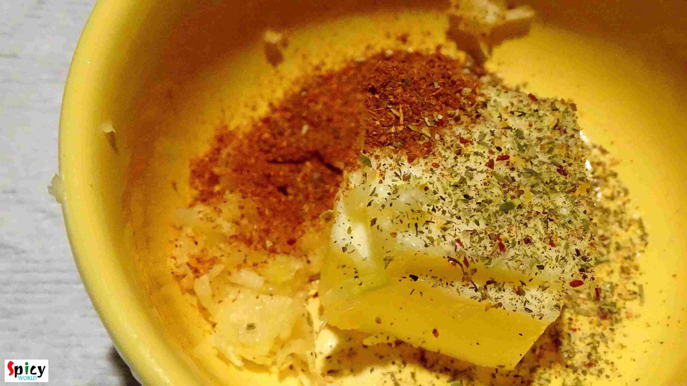
Place the chicken on a flat dish. Do not discard the skin. It will give a nice crunch.
Make few slits upon the chicken with sharp knife.
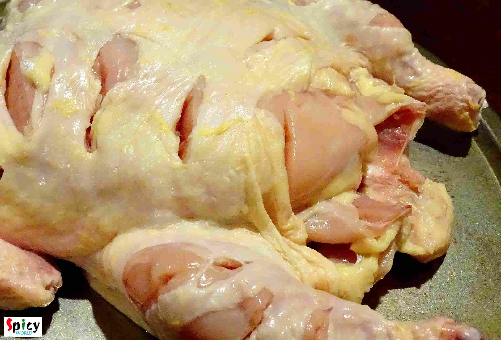
Apply the butter mixture under the skin only.
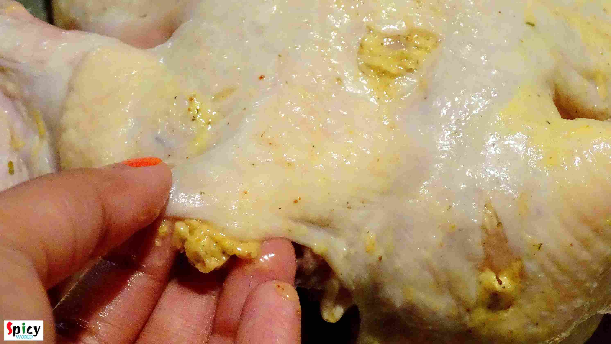
Then take oil, tandoori masala, garam masala, red chilli powder and lots of salt in a bowl. Mix it.
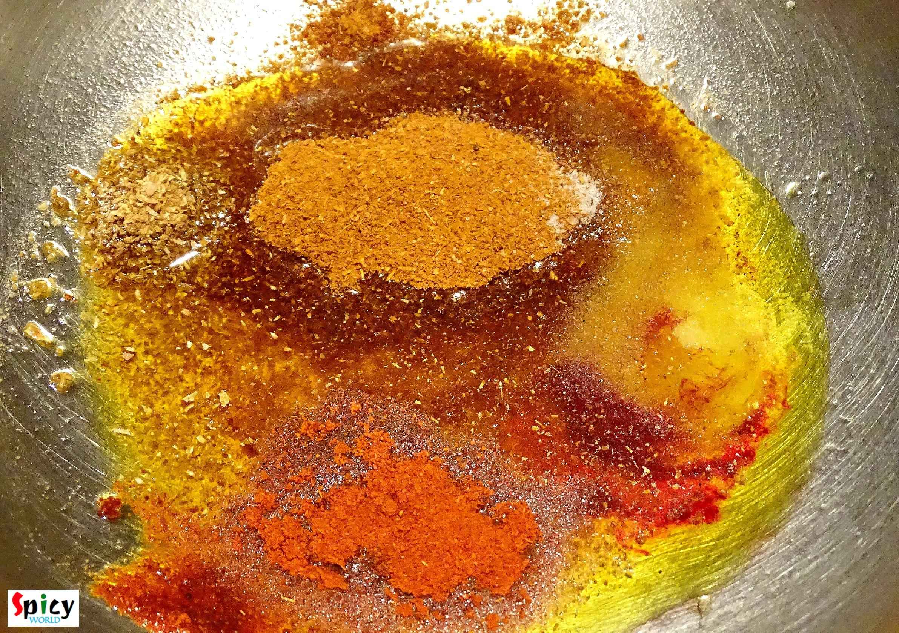
Add thick yogurt and ginger+garlic paste. Mix it.
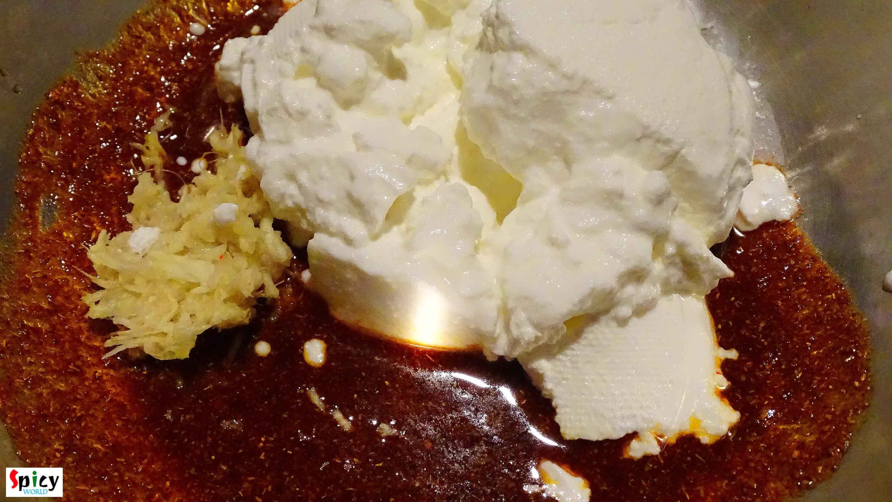
Lastly add kasuri methi and mix again.
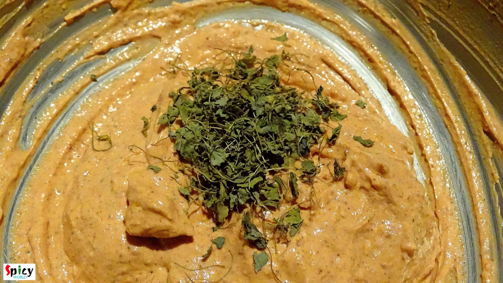
Put the chicken in the marination and massage the chicken very well.
Keep the marinated chicken in refrigerator for overnight.
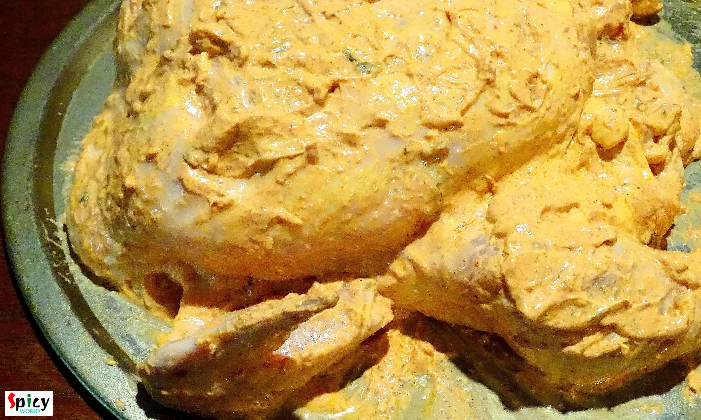
Take out the chicken from the fridge before 1 hour from baking.
Put the potato cubes and onion rings in the baking tray.
Add little oil, salt and italian seasoning. Mix them well.
Place the onion rings in the middle and keep the potato cubes on the side.
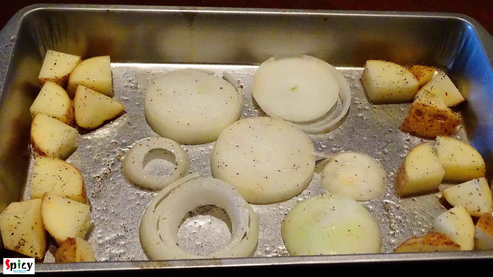
Put the marinated chicken on the onion rings.
Fill the stomach with onion chunks, coriander leaves and lemon pieces.
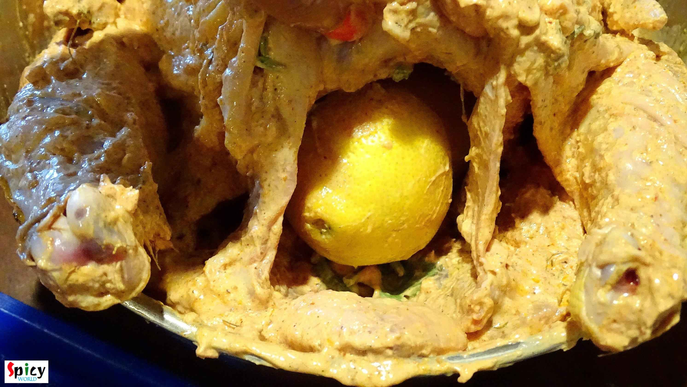
Tie up it's leg with kitchen thread.
Now its all set to bake.
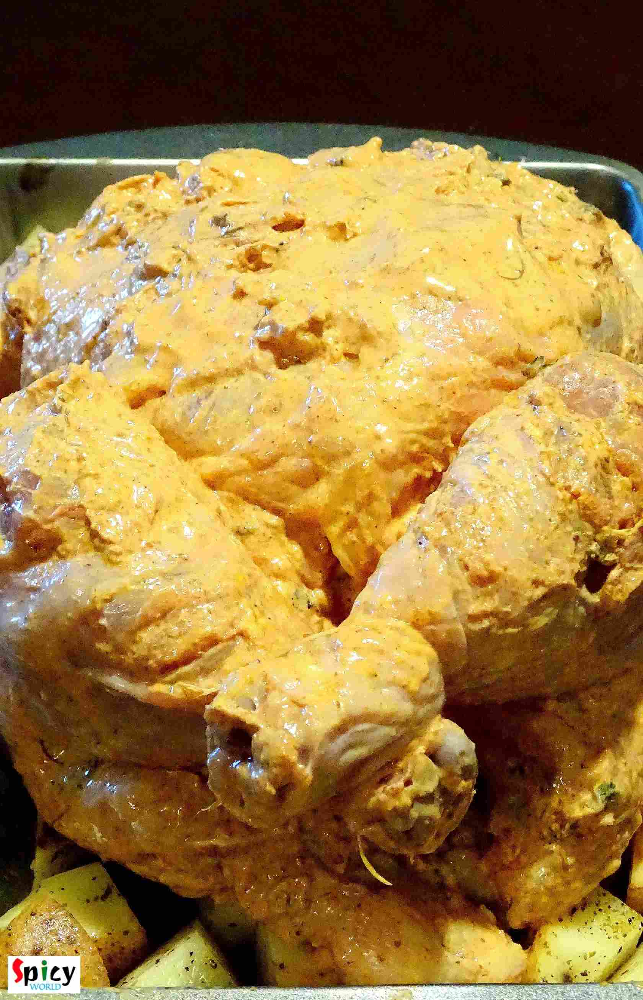
Put the chicken in the preheated oven for 1 hour in 425℉ (degree Fahrenheitt).
After baking let it rest for 10 minutes, then serve.
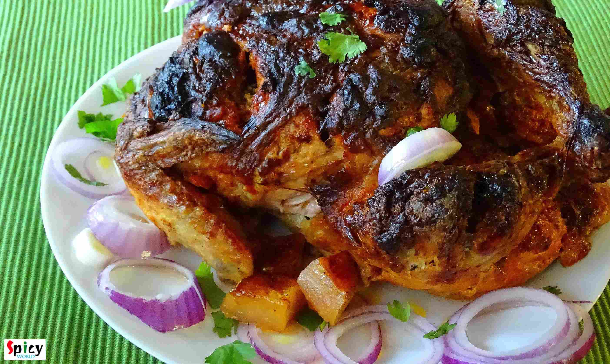
Your whole tandoori chicken is ready ...
- Enjoy this hot with pulao, some salads and green chutney.
")
Previous Recipe